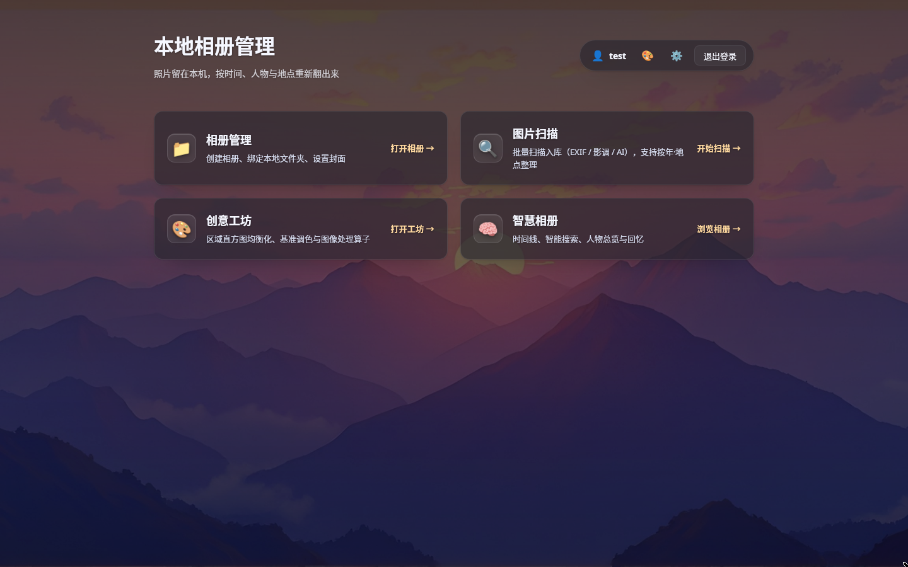
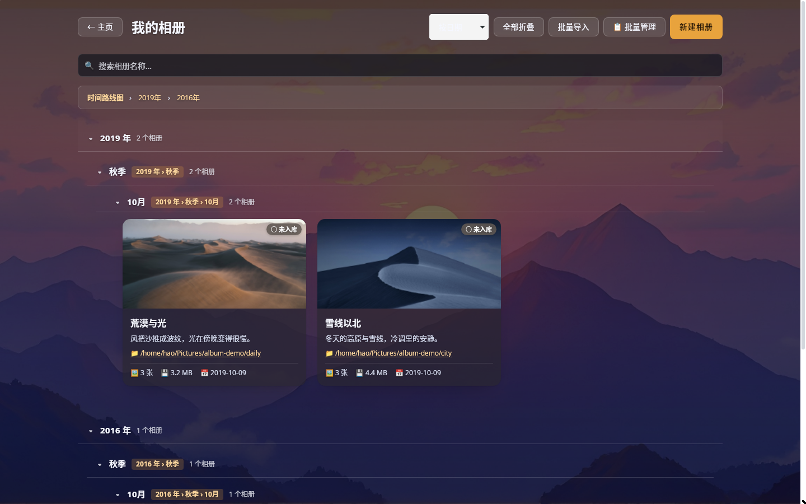
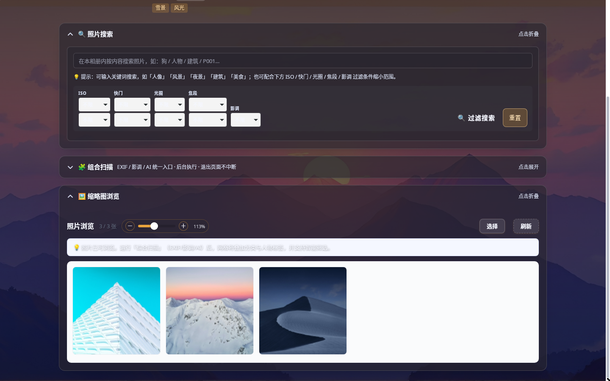
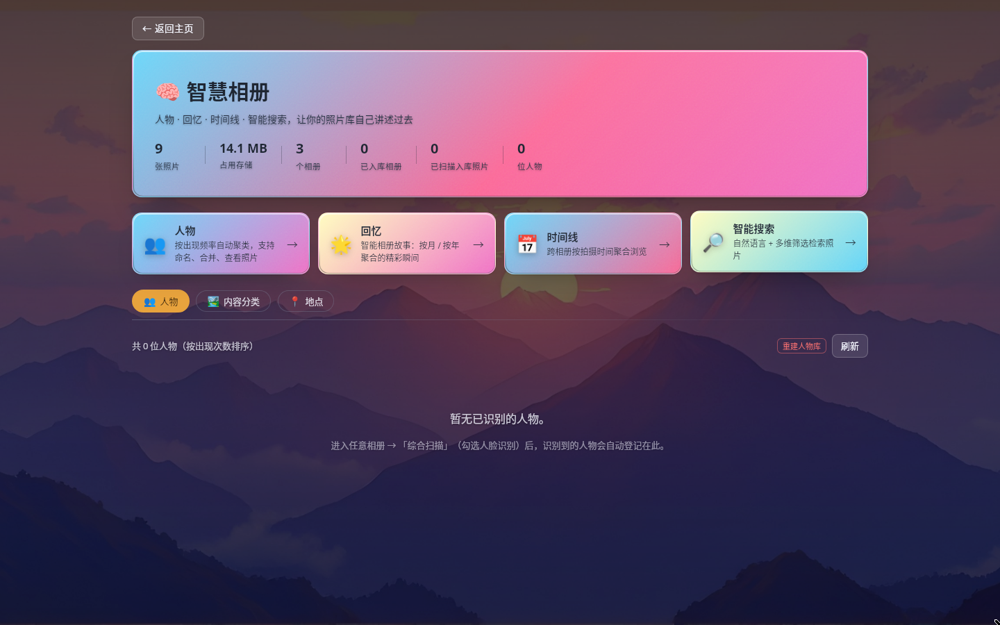

照片留在本机，AI 也在本机。
按时间、人物与地点，把攒了十年的照片重新翻出来。

01 定位
云相册替你保管照片，代价是先把照片交出去。PhotoManagementSys 反着来：照片始终躺在你的硬盘里，识别、检索、整理全部在本机完成，断网照样能用。
面向个人照片库的 Windows 桌面应用。相册是对本地文件夹的抽象——导入已有文件夹，或新建相册再绑定目录；改名、移动、归类都不动原始文件。
随应用打包的 VCR 视觉识别服务，基于 ONNX Runtime 在本机完成分类、检测、人脸与 OCR 推理。模型在应用内下载，可切换档位，也可开 GPU 加速。
| 云相册 | 本地相册搭子 | |
|---|---|---|
| 照片存放 | 上传到服务商机房 | 本机磁盘，原文件不动 |
| AI 识别 | 云端推理，按量计费 | 本机 ONNX 推理，零调用费 |
| 网络依赖 | 无网络即不可用 | 全程可离线运行 |
| 数据归属 | 托管在他人服务器 | 只在你自己的机器上 |
02 能力
从「把照片导进来」到「三秒内找到那一张」，中间的整理、归类、找人、修图都在同一个应用里完成。
创建、编辑、重命名、设封面、加标签与地点；支持直接导入本地文件夹，相册与磁盘目录一一对应。
照片自动归入 9 大类，动物再细分为狗、猫、鸟；文档走 OCR，另有场景识别与夜景判定。
人脸检测与特征提取，自动聚合同一个人；可改名、合并、删除误检，头像自动生成。
跨相册按时间铺开全部照片；按人物、地点与节日聚合成一段段可回看的回忆。
标题、标签、地点、内容组合搜索；EXIF 参数、影调与 AI 类别三合一过滤，层层收窄。
传统图像算子按参数面板驱动，可叠加 AI 处理与手绘蒙版；前后对比支持并排与分割线拖动。
批量设置地点与标签、批量移入相册、批量导出到文件夹；分组树与手动排序随手整理。
同机多账户，相册与搜索按登录用户隔离；密码 Argon2id 加盐，敏感字段 AES-256-GCM 落库。
应用内下载模型，官方与镜像源自动择优；分类模型五档切换，GPU 加速一键开关。
03 界面导览 · 入口
主页不做信息堆叠，只回答一个问题：接下来要去哪儿。四个板块对应四条主线——整理、入库、修图、检索。
04 界面导览 · 相册
相册列表沿时间轴展开：年 → 季 → 月逐层收拢，卡片上直接给出照片张数、占用空间与拍摄时间，不必点进去猜。

05 界面导览 · 浏览与检索
缩略图按需生成、分页渲染；点开即灯箱，评分、标签、归档、隐藏与删除都在同一层完成。


06 架构
桌面壳、业务后端与 AI 推理拆成独立进程，用固定契约通信。AI 换模型、改推理栈，都不牵动照片与数据库那一侧。
| 桌面壳 | Tauri 2.x（Rust） · Windows x64 |
|---|---|
| Rust 后端 | rusqlite（内置 SQLite）· image / jpeg-decoder · kamadak-exif · walkdir · argon2 · aes-gcm · reqwest · tokio |
| Python 微服务 | FastAPI + uvicorn · onnxruntime · Pillow · numpy · opencv-python |
| AI 模型 | YOLOv8s/n-cls（分类）· YOLOv8n-det（检测）· SCRFD（人脸框）· ArcFace（人像向量）· PaddleOCR（文字） |
07 工程细节
本地应用的体验上限，往往卡在 IO 与解码上。这些数字都来自真实相册的实测，而不是参数表上的理论值。
| 缩略图解码 | 改用 jpeg-decoder 的 DCT 降采样，只解所需块：6000×4000 大图换封面 7.7s → 0.76s（约 10 倍）。 |
|---|---|
| 批量识别 | 单次最多 64 张分批提交，进度事件实时回传，识别中界面照常可用。 |
| 离线地理 | 内嵌省市边界数据做点面判断，GPS 反查在本地完成，不逐张联网反编码。 |
| 三合一扫描 | EXIF、影调、AI 内容在一次组合扫描中跑完，避免同一目录反复遍历。 |
| 渲染策略 | 照片网格分页渲染、缩略图缓存落盘；封面与列表不再整页等待。 |
照片、缩略图与人物数据全部存放于本机数据目录，不上传、不回流；跨机迁移只需拷贝文件夹与 photos.db。密码用 Argon2id 加盐哈希，邮箱、手机号等敏感字段以 AES-256-GCM 加密落库，登录态支持三天免密。
08 开始使用
安装包约 108MB，内含识别微服务但不含模型（模型压缩包约 529MB）。看图、相册管理与调色不依赖模型，可以先装先用。
支持 jpg / jpeg / png / webp / gif / bmp。首次扫描大相册会花一些时间，之后只做增量探测。
本地相册搭子 · PhotoManagementSys v0.4.3 · Windows x64
仓库：github.com/howforever2000/PhotoMangementSys